| # | Finding | Kind | Lens |
|---|---|---|---|
| 3 | Give each model one colour in every window | mismatch | apply |
| 4 | Fold the Live chart past seven roles into Other | mismatch | apply |
| 6 | Draw the Stuck column with badCount() | mismatch | apply |
| 9 | Write the Per Output header in Title Case | mismatch | apply |
| 11 | Write the Flow error line at its source | mismatch | apply |
| 16 | Do not draw the last-on checkbox disabled | mismatch | apply |
| 1 | Draw the error line in --error inside a card | local defect | apply |
| 5 | Show one legend key per short model name | local defect | apply |
| 7 | Style the row fold button and align the Model column | local defect | apply |
| 2 | Stop the Success spinner when /api/flow fails | state | states |
| 13 | Show that the models did not load | state | states |
| 12 | Keep the chart legend whole at seven keys | stress | stress |
| 17 | Keep the Follow-ups key whole at phone width | stress | stress |
| 8 | Mute the inline labels of the Roles table | hand markup | seams |
| 10 | Drop the First pass aside of the Roles card | slop | slop |
| 14 | Cut the off-size note to two words | slop | slop |
| 15 | Rename the Roles group row | slop | slop |
| d1 | Follow-ups trend ▲10267% A number from the data; its baseline is a datavis question, and no design rule names it. | dropped | stress |
| d2 | Agents Live by Role title on two lines The Kit chart specimen wraps the same title; no rule asks for one line. | dropped | apply |
| d3 | Tokens axis 50,000,000 count() is the documented format. | dropped | apply |
| d4 | OK cell in the warn tone Deviations: WARN_RATE (known). | dropped | apply |
| d5 | Hand tr, tr.grp, tr.sub-row Deviations: the Roles table rows (known). | dropped | seams |
| d6 | Hand button.fold Deviations: the row fold chevron (known). Its look is finding 7. | dropped | seams |
| d7 | Lens row Model cell blank shortModel() shows empty for no value, as Values gives. | dropped | apply |
| d8 | Same error in the Agents and Roles cards No rule; it follows from proposal 2. | dropped | slop |
| d9 | Charts lost their labels in dark Artifact: the first dark shot set data-theme by hand. With the browser in dark, the charts draw. | dropped | apply |
| d10 | Live agents v2 – with no spinner while loading Rated 2: the first value is known; only v2 waits. | dropped | states |
| d11 | Unused import lastPeriod, unused _key Code, not CSS: a refit-code follow-up. | dropped | dead |
2. Stop the Success spinner when /api/flow fails stateserror
Success value and trend Kit: metric
Fix: Set loading from d (loading: !d), as followupsCard does, so the failed fetch shows –.
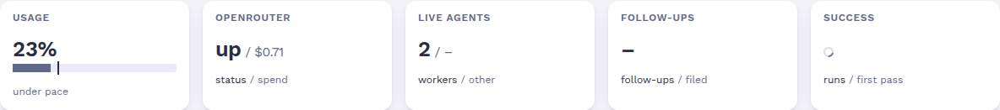
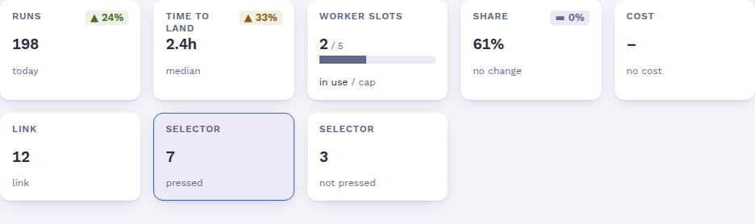
Rule: Empty state: "After the fetch, no data is empty() and a failed fetch is error(). The spinner never stands for either."
ui/views/factory-agents.js:28 (loading: !a)Guard: model: check (a new component names its error state).
17. Keep the Follow-ups key whole at phone width stresslong trend
Follow-ups value and trend Kit: metric
Fix: Keep the key's hyphen from breaking (no break inside a word) and let the trend wrap first.
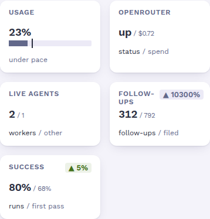
Rule: Metric card, Key: "breaks only between words, on up to two lines".
Shot: see 2.
ui/app.css (.tile key)ui/views/factory-agents.js:22Guard: model: check.
4. Fold the Live chart past seven roles into Other applymismatch
Agents Live by Role live (area, by role) Kit: chart
Fix: Fold the keys after the sixth into Other, as modelFrame does.
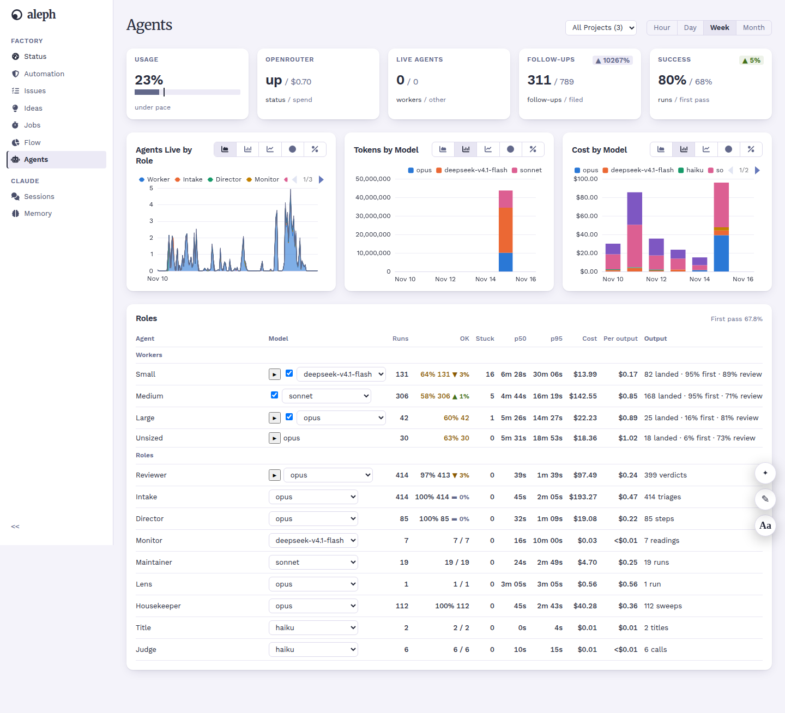
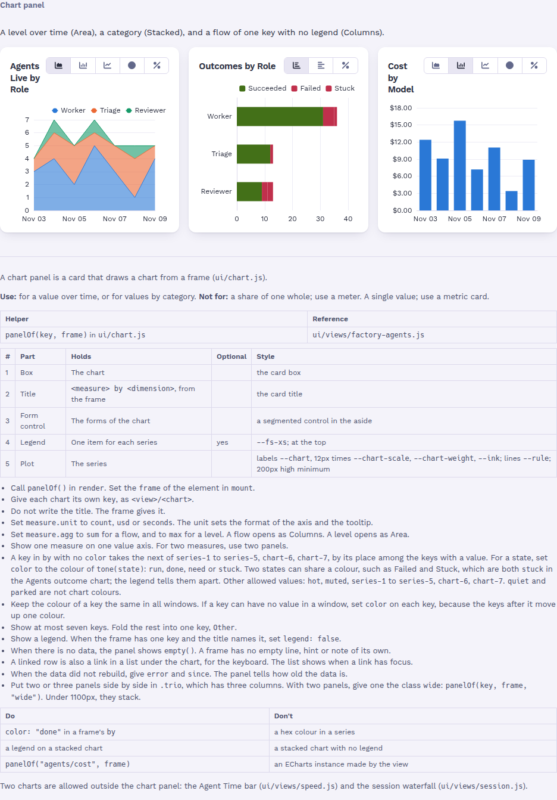
Rule: Chart panel: "Show at most seven keys. Fold the rest into one key, Other."
ui/views/factory-agents.js:96 (ROLE_COLORS, 7 entries)ui/views/factory-agents.js:102 (i % ROLE_COLORS.length)Guard: model: check.
12. Keep the chart legend whole at seven keys stressmany keys
Agents Live by Role live (area, by role) Kit: chart
Tokens by Model tokens (columns, by model) Kit: chart
Fix: Let the legend wrap to a second line in place of paging. Add a seven-key frame to the Kit.
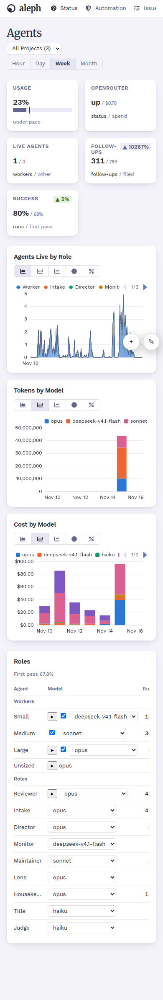
Rule: Chart panel: up to seven keys, and "Show a legend" with one item for each series.
Shot: see 4.
ui/chart.js (legend)Guard: model: check (a new chart names its legend at seven keys).
3. Give each model one colour in every window applymismatch
Tokens by Model tokens (columns, by model) Kit: chart
Cost by Model cost (columns, by model) Kit: chart
Fix: Set a colour per model that does not depend on which models the window holds.
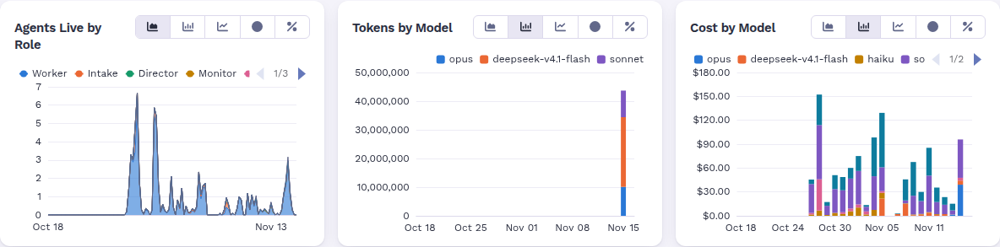
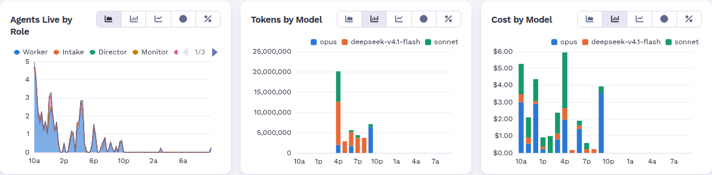
Rule: Chart panel: "Keep the colour of a key the same in all windows. If a key can have no value in a window, set color on each key, because the keys after it move up one colour."
ui/views/factory-agents.js:108 (keys from the window's buckets)ui/views/factory-agents.js:116 (color: ROLE_COLORS[i])Guard: model: check.
5. Show one legend key per short model name applylocal defect
Tokens by Model tokens (columns, by model) Kit: chart
Cost by Model cost (columns, by model) Kit: chart
Fix: Key the frame by shortModel(m), so one model is one key. The source writes two ids for one model: a refit-data follow-up.
Rule: Chart panel: "Show a legend": one item for each series. Two items that read opus do not tell the series apart.
Shot: see 4.
ui/views/factory-agents.js:108 (keys by raw model id)ui/views/factory-agents.js:111 (name: shortModel(m))Guard: model: check.
10. Drop the First pass aside of the Roles card sloprepeats a neighbour
Roles card section card (Roles) Kit: card
Fix: Delete the aside and share1.
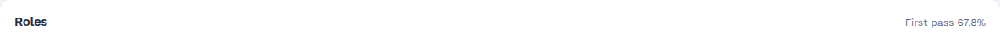
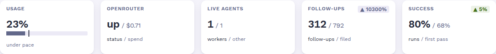
Rule: Principle 6: "Do not explain what the title, the axis or a tooltip already says."
ui/views/factory-agents.js:141 (aside)ui/views/factory-agents.js:43 (share1, toFixed: inventory helper-bypass)Guard: model: check.
1. Draw the error line in --error inside a card applylocal defect
Error line in a card error line Kit: states
Fix: Make the error rule win inside a card (for example .card .error p), from tokens.
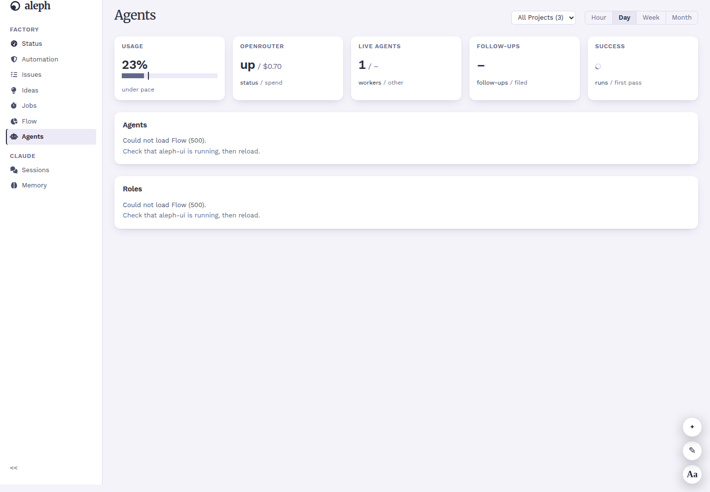
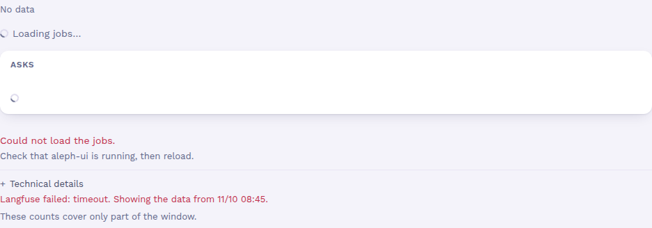
Rule: Components, Empty state, Parts: Line … an error --error.
ui/app.css:819 (.card p { color: var(--ink-2) })ui/app.css:626 (.error p { color: var(--error) })Guard: model: check. Draw the Kit error specimen inside a card() so the Kit shows the fault.
11. Write the Flow error line at its source applymismatch
Error line in a card error line Kit: states
Fix: Fix it in the shared Flow fetch (speed.js:27): throw the status only, and let each view pass Could not load X. to error() with the status as detail. Every Flow page then writes the rule's line.
Rule: Words: "Write an error line as Could not load X. and a hint. Put the upstream message in a Technical details fold." The Do example is "Could not load the agents."
Shot: see 1.
Shot: see 1.
ui/views/speed.js:27 ("Could not load Flow (${status}).")ui/views/factory-agents.js:137 (error(d.error), no detail)Guard: model: check.
13. Show that the models did not load stateserror
Models notice (Local server down; Could not load the models.) notice Kit: states
Fix: Show notice("Could not load the models.", true) above the Roles table when m is null.
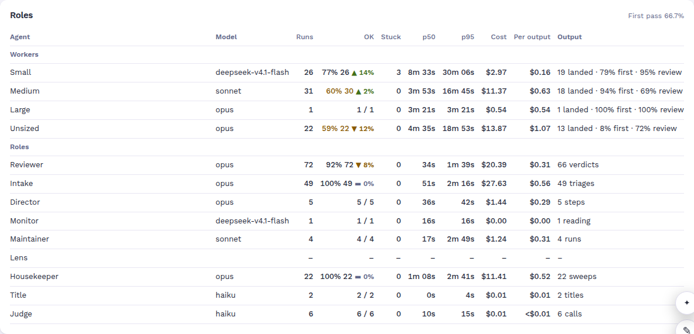
Rule: Empty state: "a failed fetch is error()"; notice() for a note above data that still shows.
ui/views/factory-agents.js:159 (.catch(() => null))ui/views/factory-agents.js:83 (text in place of the select)Guard: model: check.
9. Write the Per Output header in Title Case applymismatch
Roles header roles table: header Kit: table
Fix: Write "Per Output".
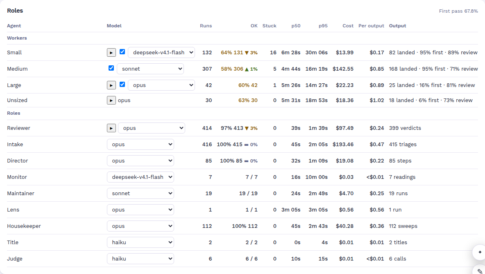
Rule: Words: "Write a page title, a section title and a column header in Title Case." Do: Jobs per Item.
ui/views/factory-agents.js:60Guard: model: check.
6. Draw the Stuck column with badCount() applymismatch
Size and role rows roles table: size and role rows Kit: table
Fix: Write badCount(o.stuck) for the Stuck cell.
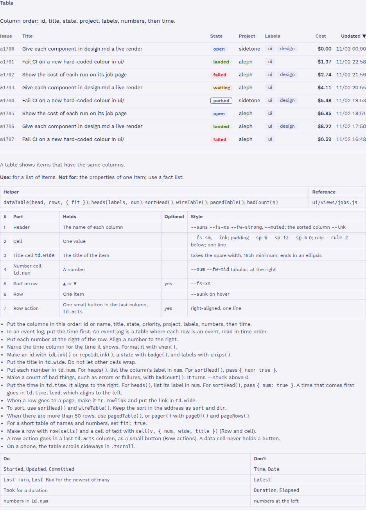
Rule: Table: "Make a count of bad things, such as errors or failures, with badCount(). It turns --error above 0."
Shot: see 9.
ui/views/factory-agents.js:72 (count(o.stuck) in cell())Guard: model: check.
8. Mute the inline labels of the Roles table seamshand markup
Size and role rows roles table: size and role rows Kit: table
Fix: Write span.quiet, the build the Deviations row names. Adding factory-agents.js to that row is a proposal.
Rule: Deviations: "Quiet labels inside a line are hand span.quiet". The Roles table writes span.m, which no rule styles in a table (.m is styled only at ui/app.css:810 .tile .q and ui/app.css:1086 .oledger).
Shot: see 9.
ui/views/factory-agents.js:70 (ended count)ui/views/factory-agents.js:71 (· first · review)ui/views/factory-agents.js:83 (Off · goes to)ui/views/factory-agents.js:85 (sub-row dates)Guard: model: check.
14. Cut the off-size note to two words sloplong note
Size and role rows roles table: size and role rows Kit: table
Fix: Show "Off", with "goes to Medium" in its title.
Rule: Principle 6: "A note, a qualifier or a caption is one or two words." "Put more in a title tooltip."
Shot: see 9.
ui/views/factory-agents.js:83 ("Off · goes to ${size}")Guard: model: check (a note is at most two words).
16. Do not draw the last-on checkbox disabled applymismatch
Size and role rows roles table: size and role rows Kit: table
Size enabled checkbox Kit: settings hand checkbox, see proposal 1
Fix: Leave the box live and refuse the last off with say(), or show it read-only as text.
Rule: States: Disabled is "opacity --dim and a wait cursor, while a request runs". Settings list: "Do not show a disabled control."
Shot: see 9.
ui/views/factory-agents.js:76 (disabled title="Last on")Guard: model: check.
15. Rename the Roles group row sloprepeats the title
Workers and Roles group rows roles table: group row Kit: table
Fix: Name the group for what is not a worker, or name the card Agents.
Rule: Slop: a label that repeats the title. The card is Roles; its second group is also Roles.
Shot: see 9.
ui/views/factory-agents.js:90 (grp("Roles"))Guard: model: check.
7. Style the row fold button and align the Model column applylocal defect
Row fold button fold chevron Kit: button
Fix: Put button.fold in the first column of the row, and add a button.fold rule from tokens (no border, --muted, fixed width).
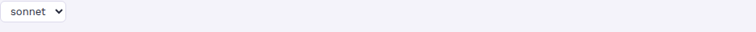
Rule: Every component: "Use tokens for all colours, sizes, spaces and radii." The hand button is a known Deviation (row: "A table row's fold chevron is a hand button.fold"); its look is not.
Shot: see 9.
ui/views/factory-agents.js:82 (button.fold)ui/app.css (no rule matches button.fold)Guard: model: check.
ui/views/factory-agents.js:76; the row names issues.js and memory.js only. Sentence: "A textarea and a checkbox are written by hand: no helper | ui/views/issues.js, the Memory editor in ui/views/memory.js and the Roles table in ui/views/factory-agents.js".ui/views/factory-agents.js:140 replaces the three panels with one Agents card while /api/flow loads or fails; panelOf() has neither form. Sentence: "A chart panel whose frame waits for a fetch draws loadingLine(); a failed fetch draws error()."